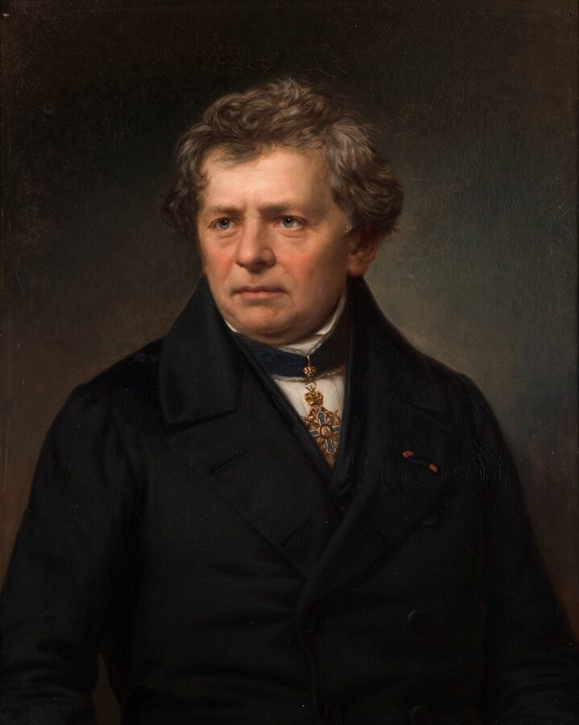

Engineering · Electronics
Ohm's Law
Every circuit you will ever build is a tug-of-war between a push and a squeeze. Turn the voltage up, swap the resistor, and watch the current answer. Then use V = IR to predict it before you touch a wire.
← Back to Engineering01 / Experiment first
Make current move
Start with a battery and a resistor. Change one thing at a time and watch the charges speed up or slow down. Record what you see, and the graph will show you Ohm's Law before you read about it.
Ideal DC model: the resistor's value never changes, and the LED is treated as a fixed 2 V drop once it lights. Dots show conventional current, flowing from + around to −.
Predict first. Keep the same resistor and double the voltage. The current will…
Data table
| # | Resistor | V | I | V ÷ I |
|---|
No points yet. Pick a resistor, try three or four voltages, and press Record point each time. Then switch resistors and do it again.
Look at the last column. For one resistor, V ÷ I comes out the same every time, no matter the voltage. That constant ratio is the resistance. That is Ohm's discovery.
Set the supply to 5 V and add the LED. Pick a resistor that keeps the LED between 10 and 20 mA and keeps the resistor under 0.125 W.
02 / Name what you saw
Push, Flow, and Squeeze
In the lab you changed two things and watched a third. Those three quantities are the whole story of a circuit: the push, the flow, and what slows the flow down.
03 / The rule
What Is Ohm's Law?
In 1827, German schoolteacher and physicist Georg Simon Ohm published the same experiment you just ran. He changed the push on a wire, measured the flow, and found the two rose together in a straight line, as long as the temperature stayed steady.
Other scientists did not believe him at first. Careful measurements won the argument, and today the unit of resistance carries his name.
Your data table showed the key idea: for one resistor, V ÷ I never changes. Call that constant R, and you have the law.

04 / Use it
Solve It
Every problem follows the same three moves: list what you know, convert to base units (V, A, Ω), then pick the form of the equation that solves for the unknown. Try each example on paper before you open the solution.
Situation: You have a 5V power supply and want to limit current through an LED to 20 mA (0.020 A). The LED drops about 2V across itself. How large a resistor do you need?
Show solution
The voltage available for the resistor = 5V − 2V = 3V
Use R = V ÷ I
R = 3V ÷ 0.020A = 150 Ω
Answer: Use a 150 Ω resistor (or the next standard value up — 180 Ω — to keep the current safely below 20 mA).
Situation: A 9V battery is connected to a 470 Ω resistor. How much current flows?
Show solution
Use I = V ÷ R
I = 9V ÷ 470Ω = 0.0191 A ≈ 19.1 mA
Answer: About 19 milliamps flow through the resistor.
Situation: You apply 12V to an unknown component and measure 40 mA (0.040 A) of current with a multimeter. What is its resistance?
Show solution
Use R = V ÷ I
R = 12V ÷ 0.040A = 300 Ω
Answer: The component has a resistance of 300 Ω.
Situation: What voltage across a 2,200 Ω resistor would produce 5 mA (0.005 A)?
Show solution
Use V = I × R
V = 0.005A × 2200Ω = 11V
Answer: The resistor needs 11 V across it to carry 5 mA in this ideal model.
Check your work: Ohm's Law solver
05 / Why it gets hot
Power: The Fourth Quantity
Remember the resistor glowing in the lab at 12 V and 100 Ω? Ohm's Law deals with V, I, and R, but a fourth quantity goes hand in hand with it: Power (P), measured in watts (W). Power is the rate at which a component converts electrical energy into heat, light, or motion.
This matters because every component has a power rating. If it has to get rid of more power than its power rating allows, the component overheats and can fail — sometimes dramatically. A resistor rated for ¼ W will burn if you run ½ W through it.
Situation: The 150 Ω LED resistor from Example 1 carries 20 mA at 3V. How much power does it dissipate? Is a standard ¼W resistor safe?
Show solution
Use P = V × I
P = 3V × 0.020A = 0.06 W
Answer: 0.06 W — well under the ¼W (0.25W) rating. A standard resistor is fine. As a rule, keep components at or below 50% of their rated power for long-term reliability.
06 / More than one part
Ohm's Law in Series and Parallel Circuits
Real circuits have more than one component. The way components are connected — in series (one after another) or in parallel (side by side) — changes how resistance, voltage, and current behave.
Series Circuits
In a series circuit, components share the same current. The total resistance is the sum of all individual resistances. Voltage is shared — each component gets a portion of the total.
Total resistance: R_total = 100 + 220 + 330 = 650 Ω
Current (same everywhere): I = 12V ÷ 650Ω = 18.5 mA
Voltage across 100 Ω: V = 0.0185A × 100Ω = 1.85V
Voltage across 220 Ω: V = 0.0185A × 220Ω = 4.07V
Voltage across 330 Ω: V = 0.0185A × 330Ω = 6.11V
Check: 1.85 + 4.07 + 6.11 ≈ 12V ✓ — the voltages always add up to the supply.
Parallel Circuits
In a parallel circuit, components share the same voltage. Each branch carries its own current. Total resistance goes down as you add more parallel branches — more paths for current to flow.
Total resistance: 1/R_total = 1/300 + 1/600 = 3/600 → R_total = 200 Ω
Total current from supply: I = 6V ÷ 200Ω = 30 mA
Current through 300 Ω branch: I = 6V ÷ 300Ω = 20 mA
Current through 600 Ω branch: I = 6V ÷ 600Ω = 10 mA
Check: 20 mA + 10 mA = 30 mA ✓ — branch currents always add up to the total.
| Property | Series | Parallel |
|---|---|---|
| Current | Same through all components | Splits between branches |
| Voltage | Splits across components | Same across all branches |
| Total Resistance | Adds up (always increases) | Always less than smallest resistor |
| One branch opens | Entire circuit breaks | Other branches keep working |
| Common use | Voltage dividers, LED current limiting | House wiring, battery banks, power rails |
Build beyond one loop
Ready to test series and parallel circuits? Use the playground to compare branch currents, voltage drops, and total resistance.
07 / Out in the world
Ohm's Law in the Real World
Every electronic device you own uses Ohm's Law — often thousands of times in a single circuit. Here are some places you will see it in action.
From Ideal Math to a Real Circuit
Ohm's Law is exact for an ideal resistor at a fixed temperature. Real hardware adds tolerance, wire resistance, supply limits, meter loading, and components whose resistance changes. Good engineering uses the equation as a model, then checks the model with measurements.
Loaded Voltage Divider
For two series resistors, the unloaded midpoint is Vout = Vin × R2 ÷ (R1 + R2). If a sensor, microcontroller input, or meter is connected to the midpoint, its input resistance sits in parallel with R2. Replace R2 in the formula with R2 ∥ Rload. This is why a divider can show the correct voltage with no load and collapse when it powers something.
Bench Lab: Predict, Measure, Explain
- Choose a safe low-voltage source and two resistors. Measure each resistor with power off and record its actual value.
- Calculate total resistance, expected current, each voltage drop, and resistor power before connecting power.
- Build the series circuit. Measure supply voltage and both resistor drops with the voltmeter in parallel.
- Insert the ammeter in series only after moving its lead to the correct current jack and selecting a safe range.
- Compare prediction and measurement using percent error:
|measured − predicted| ÷ predicted × 100%. - Explain the difference using resistor tolerance, supply accuracy, contact resistance, and meter resolution.
Common Mistakes
Quick Reference
Keep this table handy when working through circuit problems.
| Find | Formula | You Need | Units |
|---|---|---|---|
| Voltage (V) | V = I × R |
Current and Resistance | Volts (V) |
| Current (I) | I = V ÷ R |
Voltage and Resistance | Amperes (A) |
| Resistance (R) | R = V ÷ I |
Voltage and Current | Ohms (Ω) |
| Power (P) | P = V × I |
Voltage and Current | Watts (W) |
| Power (P) | P = I² × R |
Current and Resistance | Watts (W) |
| Series R_total | R = R1 + R2 + … |
Each resistor value | Ohms (Ω) |
| Parallel R_total | 1/R = 1/R1 + 1/R2 + … |
Each resistor value | Ohms (Ω) |
Quick Check
1. A resistor has a resistance of 40 Ω and 0.5 A of current flows through it. What is the voltage across it?
2. A 9V battery is connected to a 1,000 Ω (1 kΩ) resistor. How much current flows?
3. A component has 12V across it and draws 60 mA. What is its resistance?
4. Two resistors are connected in parallel across a 12V supply. What voltage appears across each resistor?
5. A 50 Ω resistor has 5V across it and carries 100 mA. How much power does it dissipate, and is a ¼W resistor safe?
6. You want to run an LED from a 5V supply at 15 mA. The LED has a forward voltage drop of 2V. What resistor do you need?